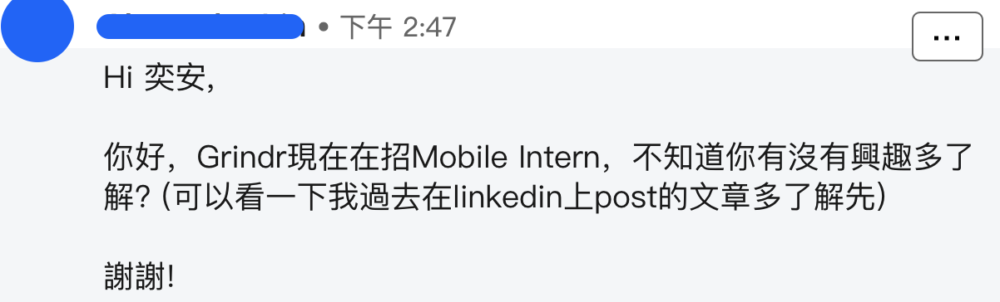
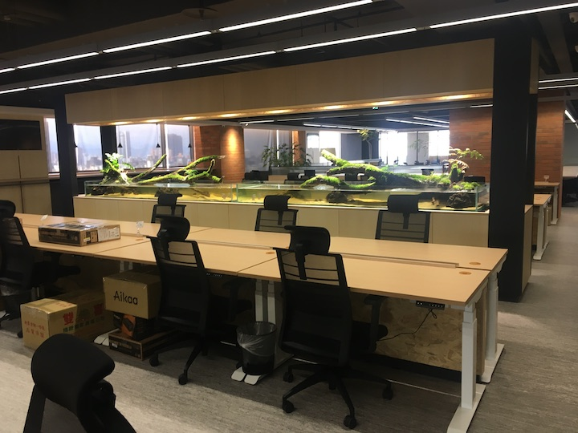
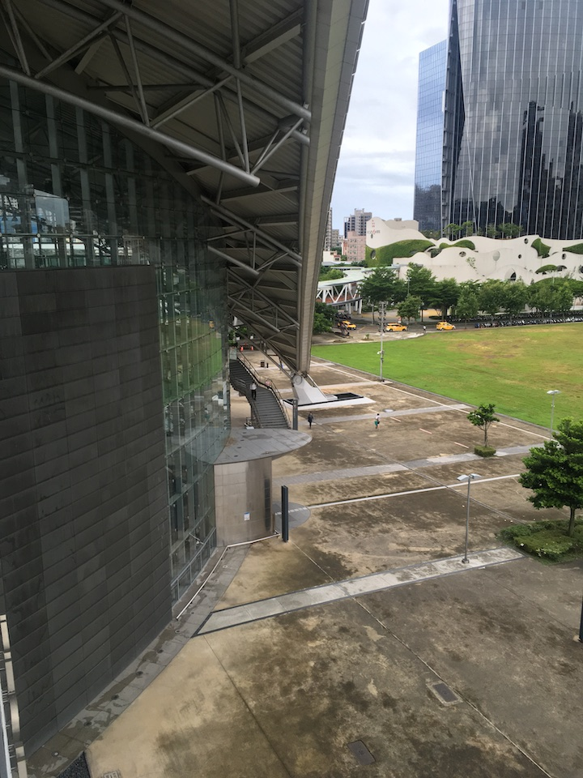
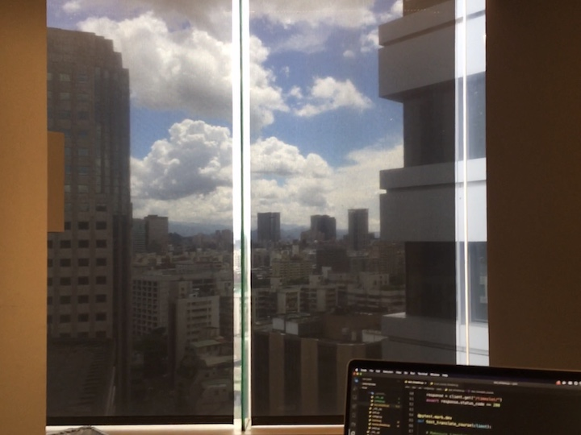
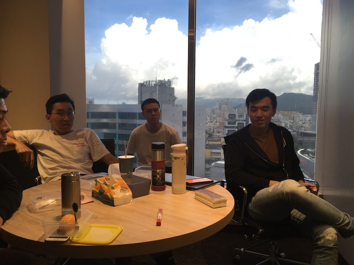

<!DOCTYPE html>
<html>

<head>
  <meta charset="utf-8" />
  <meta content="width=device-width, initial-scale=1" name="viewport" />
  <meta content="#ffffff" name="theme-color" />
  <meta content="#da532c" name="msapplication-TileColor" />

  
<link href='&#x2F;icons&#x2F;site.webmanifest' rel="manifest" />


<link href='&#x2F;icons&#x2F;favicon-16x16.png' rel="icon" sizes="16x16" type="image/png" />


<link href='&#x2F;icons&#x2F;favicon-32x32.png' rel="icon" sizes="32x32" type="image/png" />


<link href='&#x2F;icons&#x2F;apple-touch-icon.png' rel="apple-touch-icon" sizes="180x180" />

  

<link href='https:&#x2F;&#x2F;ianchen.tw&#x2F;main.css' rel="preload" as="style" />
<link href='https:&#x2F;&#x2F;ianchen.tw&#x2F;main.css' rel="stylesheet" />


  
  

  <title>
     IanChen | Grindr 實習紀錄 
  </title>

  
  <script src="https://kit.fontawesome.com/ab28266223.js" crossorigin="anonymous"></script>

  
  
  
  <script async src="https://www.googletagmanager.com/gtag/js?id=UA-116173804-1"></script>
  <script type="text/javascript">
    window.dataLayer = window.dataLayer || [];
    function gtag() {
      dataLayer.push(arguments);
    }
    gtag("js", new Date());
    gtag("config", "UA-116173804-1");
  </script>


</head>

<body class="">
  <nav id="navbar" aria-label="section navigation" class="navbar" role="navigation">
<div class="container">
    <div class="navbar-brand">
    <a id="navbar-title" class="navbar-item has-text-weight-bold" href="/about">IanChen</a>
    <a aria-expanded="false" aria-label="menu" class="navbar-burger burger" data-target="navMenu" role="button">
        <span aria-hidden="true"></span>
        <span aria-hidden="true"></span>
        <span aria-hidden="true"></span>
    </a>
    </div>
    <div class="navbar-menu" id="navMenu">
        <div class="navbar-start">
            
                <a class="navbar-item" href='https:&#x2F;&#x2F;ianchen.tw&#x2F;about'>
                    About
                </a>
            
                <a class="navbar-item" href='https:&#x2F;&#x2F;ianchen.tw&#x2F;posts'>
                    Posts
                </a>
            
                <a class="navbar-item" href='https:&#x2F;&#x2F;ianchen.tw&#x2F;tags'>
                    Tags
                </a>
            
                <a class="navbar-item" href='https:&#x2F;&#x2F;ianchen.tw&#x2F;archives'>
                    Archives
                </a>
            
        </div>
        <div class="navbar-end has-text-centered">
            <a class="navbar-item" darkmode-switch-button id="dark-mode" title="Switch to dark theme">
            <span class="icon">
                <i class="fas fa-adjust"></i>
            </span>
            </a>
        </div>
    </div>
</div>
</nav>

  
  

  
<section class="section pb-0">
  <div class="container">
    <div class="columns">
      <div class="column is-6 is-offset-3">
        <article>
          <h1 class="title">Grindr 實習紀錄</h1>
          <h2 class="subtitle">2020&#x2F;02 - 2020&#x2F;08 半年來在 Grindr Taiwan 的實習過程</h2>
          <div class="columns is-multiline is-gapless">
            <div class="column is-8">
              
  <p class="theme-color-dimmed">
    <a href="/about">
      
        
      
    </a>
    
      <a href="/about">
        <span class='author-name'>
          奕安
        </span>
      </a>
      published on
    
    <span class="icon">
      <i class="far fa-calendar-alt"></i>
    </span>
    <time datetime='2020-09-16'>September 16, 2020</time>
  </p>

            </div>
            <div class="column is-4 has-text-right-desktop">
              
  <p class="has-text-grey">
    <span class="icon">
      <i class="far fa-clock"></i>
    </span>
    38 min,
    <span class="icon">
      <i class="fas fa-pencil-alt"></i>
    </span>
    7406 words
  </p>

            </div>
            <div class="column is-4">
              
            </div>
            <div class="column is-8 has-text-right-desktop">
               
  <p>
    <span class="has-text-weight-normal">Tags:</span>
    
      <a class="link" href='https:&#x2F;&#x2F;ianchen.tw&#x2F;tags&#x2F;life&#x2F;'>
        <span class="icon is-small">
          <i class="fas fa-tag fa-xs"></i>
        </span>
        life
      </a>
    
      <a class="link" href='https:&#x2F;&#x2F;ianchen.tw&#x2F;tags&#x2F;gong-zuo&#x2F;'>
        <span class="icon is-small">
          <i class="fas fa-tag fa-xs"></i>
        </span>
        工作
      </a>
    
  </p>
 
            </div>
          </div>
          <div class="content has-text-justified">
            <p>在我的經驗中，Grindr 是一間氣氛獨特的公司，跟其他地方感受到的不大相同。環境舒適，適合成長，甚至讓我實習一個月後一度想嘗試碩班休學到轉成全職員工，妄想著工作個一兩年，累積經驗與財富之後再出國工作。</p>
<p></p>
<span id="continue-reading"></span>
<p>而對 Grindr 這類的美國新創小型新創來說，最重要的事情應該就是上市。</p>
<p>合約終止後，我在經驗上的最大收穫就是：企業並不會把員工當家人照顧。</p>
<p>對他們來說，所謂的僱傭關係就僅僅只是一紙合同，不管在上班時公司讓你認為自己的感受有多被重視、大家多像一份子，你都要時時刻刻說服自己，<strong>這些都只是工作用的場面話，目的只是要提升大家的工作效率，提高公司獲利</strong>。</p>
<p>逢場作戲，作為演員，最重要的就是不要讓這些戲進到你心中，這樣是會傷身的。</p>
<p>這篇文章紀錄了我 2020/02 - 2020/08 半年來在 Grindr Taiwan 的實習過程，包含公司的面試、架構，薪資細節，以及台美公司間感受到的文化差異。</p>
<hr />
<h2 id="yi-qie-de-kai-shi">一切的開始</h2>
<p></p>
<p>2019 年年底，我在 Linkedin 上收到了 Alex 寄來的面試邀請。 當下除了震驚之外什麼都沒有感受到，因為 Grindr 是過去身旁大神實習過的公司，從來沒想過自己能被這間公司邀請，更沒想過能真的進去實習。</p>
<h3 id="ran-hou-wo-jiu-jin-lai-liao">然後我就進來了</h3>
<p>Alex 在回傳訊息給他的當下就希望能直接用 Line 來場簡單的聊天，我認為對比一個身為求職者的自己來說，他反而異常的積極了不少。聊天時簡單說明一下實習的重點，不用會寫 Android 也沒關係，主要是就讓通過資格的人放到團隊中工作，如果幾個月後可以跟得上團隊腳步，表現得還不錯的話就能轉成正職。</p>
<p>閒聊時，Alex 也跟在抱怨說台灣的人很難找，都不知道去哪裏找人來面試。但這裏也會覺得很奇怪，為什麼是讓一位 VP 來招人而不是人資呢？在六個多月結束實習後的某次聊天時他才透露因為人資不懂哪些是好的人才，所以才會需要自己來幹。</p>
<p>在電話上說完大致內容後，Alex 就說等我準備好之後就可以把履歷寄給他，開始跑面試流程。不過我因為自己當時正在忙編譯器課程作業的改版，所以就這樣拖了幾個星期才展開面試流程。</p>
<h3 id="shi-xi-sheng-mian-shi">實習生面試</h3>
<h4 id="zuo-ye">作業</h4>
<p>面試本身並不難，最初人資先寄給我一份 Android 小作業，目的是做出一個充滿頭像的 <code>Cascade 頁面</code>，讓被點擊的頭像消失，並同時支援取消功能，這題只要把其中寫一半的 <code>recyclerview</code> 就算完成了，大抵上是看著 <code>Google</code> 的 Andriod 教學後就能知道該怎麼下手。回寄完成的小作業後，馬上就會被約線上面試，跟內部的資深工程師一對一解題目還有聊天。</p>
<h4 id="coding-interview">Coding interview</h4>
<p>線上面試就是開一個兩人可以共同看到畫面、有支援語法 highlight 跟執行的線上編輯器。考試也只考一題不難的演算法，簡單來說就是給一串在 x 軸上可能彼此重疊的線段，把他們重疊的區段進行整併，然後回傳一段彼此不重疊的新線段。</p>
<p>從結果往回看，雖然面試時把題目解開算是重要，但因考題也不難，解開問題反而不會是重點。更像是看一下怎麼跟面試官溝通。(這種轉移焦點的作法就像過去大學做期末專案時我總是做一些了無新意的垃圾，但當下為了不要覺得自己太廢也只好說服自己努力在其他地方擠出亮點QQ)</p>
<p>面試前有被同學提醒過，解題時要把自己的思緒講出來，因為這樣面試官不僅可以了解你在幹嘛，也可以在觀念卡住時適時的幫助你，節省彼此時間，讓面試流程變順暢。雖然在面試前有到 <code>Leetcode</code> 抓個兩三題練習放聲思考。但直到面試時才是第一次有觀眾在看我這樣做，緊張讓寫程式充滿生疏感，也是比平常多花了不少時間才完成，但簡單的整體流程就是 1. 理解題目 2. 撰寫整個答題用的環境 3. 用最基礎的演算法先寫 pesudo code 4. 用pytest撰寫測試 5. 實踐並改進程式碼。樸實的五步驟，過程中保持讓自己的思緒有被講出來，即便是除蟲時也是。</p>
<p>「好，那差不多就這樣」，解完題目後直接進入聊天的階段了，彼此認識一下聊個天後就結束了。 過了幾天後就就收到的錄取通知。(God)</p>
<h3 id="mian-shi-hou-de-fan-si">面試後的反思</h3>
<p>答應面試邀請時是摻了點試運氣成分，但面試後又開始覺得可能有機會了，於是我又開始思考了一些奇怪的問題，比如說這間公司在台灣生根的目的，是單除為了節省經費還是跟我一樣單純抱有一個要回饋，建設台灣的心呢？</p>
<p>畢竟台灣的純軟體業環境之糟糕不是一兩天的事，基本上整個產業都是依附硬體而生。我總是想，要是能夠有間在國外真實上線，面向一般使用者的軟體商能夠來台灣紮根是個多難得、多該被我們好好珍惜的機會呢？回去翻了 Alex 寫的文章，可能發現也有這樣的特質存在吧！所以當初也是像隻等著出門散步的小狗一般，一頭熱的等待入職。</p>
<p>直到後來跟教授聊天時才理解到，雖說這樣的企業有可能抱有建設台灣的理念，但企業的本質就是為了讓股東獲利，他們會台灣找據點更多應該是為了廉價的人力成本，就如同 Google Taipei 一樣，除了 Google 看上台灣製造硬體的地利之外。</p>
<p>在這些外商的角度下台灣是個便宜的人才島，總給起島內前幾高的薪水，聘請我們生態中最好的人去做他們想做的事情，即便無聊也是。</p>
<p>畢竟在這時代美國的 CS 新人可以開到年薪 300 萬台幣，但相同的價碼在台灣是可以請到高階甚至主任級的軟體工程師。我想這是我們的悲哀，也是我們的機會。</p>
<h2 id="grindr-de-gong-si-jia-gou">Grindr 的公司架構</h2>
<p></p>
<p>在我實習時 Grindr 在台灣的主要是由「<code>台灣基達科技</code>」這間公司來管理，但當時台灣基達並不是 Grindr 的海外子公司，而是被授權商標的外包廠商。</p>
<p>簡單來說員工在內部被稱作 Grindr Taiwan 的員工，也跟 Grindr 員工共享所有的內部資訊跟程式碼，但實質上只是個外包團隊。回到實務面，Grindr 在工程人員上的架構十分扁平，舉例來說，實習生與正職工程師都隸屬於特定的資深工程師，而這些工程師是匯報給 VP of Engineering，大抵上就碰到最高階的管理階層了，其實都有不少機會可以跟上層的管理者交流，政策跟方向也不會傳很多層才到員工耳邊。</p>
<p>在資訊流通方面，公司對於內部的態度基本是開放。作為一個實習生是有辦法了解整個公司的發展方向，也能看見主管的報告內容以及不少內部文件的。</p>
<h2 id="xin-shui-ji-shi-xi-ji-hui">薪水及實習機會</h2>
<p>實習生的基本薪水在 Alex 的頁面上有揭露過，所以算是公開資訊。所以這裡就除了個人的內容之外再補上些細節。</p>
<p>寫在前頭，一般來說薪資本身並不屬於業務機密，公司會簽保密條款的理由應該是避免員工的攀比以保護那些高薪員工，又或是避免太容易被挖角影響營業安全。</p>
<p>雖說我有在工作合約上簽訂薪酬保密條款，但這條款也謹謹規範「不得將薪資洩露他人，亦不打聽他人資薪資待遇」，且合約並沒有規範到期限結束之後的事項，再加上<strong>2020 年九月之後台灣的實習生也因公司政策被全數資遣，同職位人的薪資內容在此之後已經沒有任何的攀比或是挖角問題。</strong> 我以促進跟監督市場上公司的角度出發，這些內容應已屬可公開訊息。</p>
<h3 id="xin-shui-ji-suan">薪水計算</h3>
<p>實習生的基礎薪資是以日薪作為計算，一天 2500 台幣。只不過與正職的差別是實習生上班是需要打卡算鐘點 -- 必須要在辦公室工作八小時才會算是完整的工作日，中午有一小時的午休，不計入工時內，所以如果早上九點整進入辦公室之後要一路待到下午六點才可以離開(8小時+1小時午休)。</p>
<p>其中如果上班不到八小時的話就按照實際到班時間比例給薪，但實習生沒有加班的問題，因為超過的時間一律不算在工時內，所以直接每天上班的時數到了之後直接離開辦公室就好，也不會向其他的科技公司有一些默認加班的心裏壓力。</p>
<p>我想會沒有加班壓力的主因是因為台灣基達科技是一間外包公司，所謂的薪水並不是照著進度而是照著鐘點計算。</p>
<p>我的第一份合約最開始是從 2020 年二月開始簽訂到 2020 年六月，<strong>日薪2500台幣</strong>，一星期至少進辦公室 2 天。其中我認為合約上的最低工作天數更像是一種鬆散約定，出於勞資雙方的尊重公司是允許我是可以在報備後臨時不去上班的。</p>
<p>而在六月換約之後我認為薪水太低也有再往上談過一次。從數字來看 Grindr 給出的薪水已經算是在台灣實習的前段班了，但我倒覺得這份薪水算是還可以接受而已，因為實習生進入公司後並不是被指派去撰寫一些不會有用戶用的玩具專案，空耗公司資源而已，而是跟正職維護同一份函式庫。</p>
<p>在其中也不會有專職的人來帶領你做事，基本上這就幾乎是正職員工了(只差在職稱不同)。在做差不多的事情之下領少於別人一半的薪水，那我就覺得就有因能力、貢獻度或其他因素把薪水再往上談的空間。</p>
<h3 id="tong-qin-kuang-re">通勤狂熱</h3>
<p>我在2020年七月第一次換約時把自己的薪水談到每天 <strong>2750</strong> 元。但同時決定暑假結束之後如果談不到每天 3000 元我就會選擇離開。</p>
<p>為什麼呢？首先是新竹台北通勤因素 -- 為了實習我必須選擇在平日時每天在新竹跟台北間通勤。但同時也必須處理研究、編譯器助教以及學校課程的進度壓力。</p>
<p>這樣需要很嚴謹的精力跟時間管理，為了保持自己能夠在上班跟下班時能持續產出。我選擇高鐵通勤往返。但這同時也把我的通勤時間拉的很長。</p>
<ul>
<li>5:50 起床，6:25 騎機車出發搭台鐵轉高鐵，7:34 到台北之後在 8:00 進辦公室</li>
<li>17:00 離開辦公室搭 18:11 高鐵回新竹，19:02 轉搭台鐵回家，大概 7:30 左右到家</li>
</ul>
<p>雖然每天需要花三個半小時在通勤上，但在通勤的時間也都會打開筆電做事，這樣高精力支出跟壓力的生活讓我很常面臨 burnout 的困境。</p>
<p>談到成本，每天兩地通勤的成本差不多是500元左右，導致一天工作實領只會有 2000 元，這樣在碩士生活規劃緊湊的情況下還要花不少精力在做這件事，只能說自己接家教更好賺，也賺得更輕鬆。</p>
<p>所以到 Grindr 實習更大的一部分並不是為了錢，而是想多花心力來體驗美商工作環境，嘗試自己是否適合 Android開發，閱讀實際有在使用的程式碼，以及見證現實中的軟體團隊會是如何管理專案。</p>
<p>只不過一但待久之後，視野增長會漸漸隨著時間降低，這份薪水就沒有辦法支撐我額外花心力了，解決方案不是降低通勤時間，就是要把手上的其他外務給放棄掉。</p>
<p>只能說這種台北長期純軟體實習其實對新竹的學生不大友善，但也很無奈，因為大部分純軟體實習都在台北，但卻不會因為純軟體的性質就能遠端工作。</p>
<p></p>
<h2 id="guo-cheng-zhong-ti-yan-dao-de-you-yu-lie">過程中體驗到的優與劣</h2>
<p>這是個開發速度很快的團隊，整個團隊每天大概都可以上個 20-40 次程式碼改動。而每兩週就會發布一次產品的小更新。在這種快速推進的團隊中做事其實很舒服，我也喜歡能為這種團隊中貢獻的感覺 — 實習生寫的程式碼都會直接進入主產品。</p>
<h3 id="code-review">Code Review</h3>
<p>平時的工作就跟正職一樣解 bug、開發新功能，只不過實習生沒有績效壓力，讓我認為這樣的環境是自由的且舒適的。</p>
<p>實習期間，每份的程式碼改動都必須要經過 <code>Code Review</code> 把關後才能正式進入產品程式碼，所謂的 Code Review 就是會有其他工程師來看看你改了哪些程式碼，進行理解並針對不好的地方進行評論，可能會是設計有問題，又或者是近一步的對改動的功能進行討論。這樣的過程不僅可以對程式的品質進行把關，也是讓公司在程式碼之外留下對應的討論紀錄，讓未來其他人在理解程式碼如何運作之外也能藉機追溯到最初的設計理念。</p>
<p>我很享受在這邊進行的 <code>Code Review</code>，因為不管是大是小，身旁的同事總能提出一些我沒發現的問題，比如說設計的品味不好，或是不一致的程式碼介面設計。而隨之而來的近一步討論也曾有好幾次直接提升了我的架構觀，在實習的下班之餘，常常把上班時得到的建議應用在自己的私人專案上。</p>
<p>簡單的評論與建議看來僅僅是短短幾行，但我能體會給出這些建議有多麻煩。因為自己也同時在實習之外跟其他同學合作寫專案，有不少問題都是能在幾分鐘內修掉的問題，但為了對方好，也是為了專案的架構跟一致性，總是要耐心給出建議，並同時花時間說服撰寫者讓他給出更好的建議。總的來說 <code>Code Review</code> 是一件短期看起來花成本，但以公司發展角度來說卻頗為正確的投資。而我很高興這些正職同事會選擇花時間栽培待不久的實習生們，也希望我未來能力漸長後仍有這樣的耐心來栽培新人們。</p>
<p>不過這邊就有一個過程中遇到的小問題了 — 我在加入的前4個月基本上都是在沒人指導的方向下自己想辦法自學 <code>Android</code>，大部分時間就是老實的把 Google 中 Android 的文件刷過一遍，下班之後再繼續找其他人寫的觀念文章來讀，在公司的大部分時間也不會有人主動分派任務給我，除非主動去跟其他工程師要求事情做。</p>
<p>正當我漸漸以為這樣的運作模式是常規時，在我進入公司的四個月之後進來了下一批實習生。我眼睜睜看著他們被分配一批資深工程師去指導，最後才發現自己終於在四個月後也有了導師，只不過既然都過了四個月，導引的用處也已然消失。</p>
<p>雖然聽起來很可憐，但其實也不一定是內部的問題，因為剛進入的那四個月差不多就是 COVID-19 最初爆發的時間，公司把大部分的工程師放在因應開發 COVID-19 的功能中。就結果來說，我也蠻慶幸的，因為認為自己其實比較適合自學，因為我喜歡先透過研究來產生出自己的一套理解，再去根據這套理解提出問題來請其他人幫我校正，這樣感覺更踏實些，也更像一位要做研究生該有的訓練。不過也幸好公司每個人都很樂於分享，每次有機會問完問題後總能給出一些很棒的方向供我後續查找。</p>
<p>簡單來說，我大概喜歡 Grindr 的這幾點：</p>
<ul>
<li>開放的文化 - 至少在性向認同上是的</li>
<li>輕鬆的工作環境</li>
<li>適當的自由</li>
<li>容易反饋的空間</li>
</ul>
<p></p>
<h3 id="mei-zhong-bu-zu">美中不足</h3>
<p>但這次的實習我也是抱著特定目的而來 — 期待看見一個純軟體產業公司的工作型態，包含如何討論，如何對細節進行打磨，以及專業的產品測試流程，最後我也希望藉由在大型專案合作，看懂程式碼來提升我的實作與理解能力。夢想是豐滿的，現實卻充滿骨感，在一個資源有限的小公司不一定能把所有理論上的事情都做到最好</p>
<p>那接下來就是公司在工程上美中不足的部分，也就是固然重要但正被犧牲的事情。</p>
<ul>
<li>
<p>略微粗糙的質感</p>
<p>進公司拿到手機端 App 之後，其實馬上就能發現好幾個不直覺的互動介面問題，比如說在手機鍵盤開啟時點擊鍵盤外部區域鍵盤不會自動縮小，管理搜尋介面物件的狀態並不符合期待，還有特定按鈕下時不會對無效操作產生任何回饋，進而降低使用者體驗的種種問題。</p>
<p>這邊提到的質感更傾向於產品互動介面上的不細緻，就好比 Gamker 在提到遊戲的角色快捷技能介面時的<a href="https://youtu.be/VXWpZJqLe28?t=1365">例子</a>(22:45-24:10)，又或者是最初介面設計者沒有思考過在每個畫面狀態下的任何舉動應該代表什麼意思，進而設計出對應的結果。整體來看，產品在細節上的質感是需要近一步調整，但我認為就算暫時不改也可以接受，因為 Grindr 在我的實習期間是以功能開發為主，而非定位在打磨產品細節上。
但近期換新 CEO 後內部開始著重在提升用戶的回饋分數，所以我認為是該把細節給打磨好，讓用戶有被伺候得服服貼貼的感受，才會是整個產品該做的事情。</p>
</li>
<li>
<p>需要時間上手的文件</p>
<p>Grindr 內部有關程式碼跟程式行為規範的文件其實不多。但幸好即便函式庫蠻大，團隊也有透過持續重構來維持整體的程式碼的架構。直接閱讀程式碼來快速的理解每個組件各自的用途並不會太困難。雖然說一個小公司不可能把所有的精力花費在撰寫跟更新文件之上，但我仍認為 Grindr 在文件上還是可以在進一步提升，至少可以有一些整體大架構的解釋，或是整個大功能的設計理念，幫助其他人抓取到一些不能閱讀程式碼外獲得的資訊，來讓其他同事能快速上手。</p>
<p>在閱讀內部的程式碼時，我也意外多了一份體悟 — 企業實際用上的程式碼並不需要什麼漂亮或複雜的設計模式或是特殊演算法，撰寫的重點反而會在如何穩定的建構出特定的功能。而在面對如何產生清楚的程式邏輯時，可以多透過設計高階的物件與其之間的互動來表達出整體運作邏輯，更能讓剛閱讀程式碼的人領會到整體的設計精神，甚至讓閱讀者只要畫出物件之間的互動關係就能夠理解最初的設計者是如何把設計轉化成真正的運作邏輯。</p>
<p>內部文件不多是個美中不足的點，但在閱讀內部程式碼的同時也會讓能力長進不少。</p>
</li>
</ul>
<h2 id="zai-shi-xi-zhong-zuo-liao-xie-shi-mo">在實習中做了些什麼</h2>
<p>最初期的實習生活花了大部分的時間看 Google 的 Android 教學以及閱讀整個安卓手機端程式碼。前後大概花了兩個月的時間上手 Android 開發，能夠讀懂既有的程式碼並獨立修復一些比較特殊的 bug。</p>
<p>在這之後被分派到了處理用戶聊天資料備份流程的工作，要去重構跟設計整個備份的流程。這邊其實有點小感觸，因為我在做手動備份跟自動備份的功能，要把兩者的顯示介面統一成相同的物件，但一來說這件事是在概念上完全相同，但實際上背後調動的東西是不太一樣的。仍需要一點功夫才能讓介面看起來完全相同。在理解程式碼的同時也會對整個系統是怎麼運作的有一些了解，也趁機藉著新手在釐清觀念時找到了系統既有的問題，比如說在備份的某些階段使用者是無法收發訊息，甚至可能在特殊情況下新進訊息會被丟掉的問題存在。當然，這些問題都已經被修復了。</p>
<p>到了最後的一個多月，我漸漸感覺到自己不喜歡寫 UI，幸好 Jackson 丟給我了一個新的專案，目的是提供用戶把自己在手機內的聊天訊息匯出成特定格式，並且在更換手機或是平台時能夠再度匯入自己資料的功能。我覺得自己在接到這個工作之後開心了不少，因為我可以遠離跟介面有關的程式碼，而直接投入到一個新的架構設計。而且在這個之中我被賦予了很大的自由，比如說擬定整個儲存的方案跟格式，並主筆著 Android 平台上的實踐。在這次經驗中我有種變成主角的感覺，讓其他正職成為我的輔助做事，有機會主導開會並闡述我自己的想法，是個很難得的經驗。</p>
<h2 id="gong-zuo-wen-hua-de-chai-yi">工作文化的差異</h2>
<h3 id="chang-mian-hua-da-shi">場面話大師</h3>
<p>Grindr 內部的通訊軟體是 Slack ，一般來說 Slack 的聊天機制就是根據內容主題來分類不同的討論空間 (稱為channel)。一個人在 Slack 中可以同時加入多個 channel，也可以隨時退出，而單一 channel 會被拿來追蹤單一的專案進度，又或是給一個社團或團隊的人在討論討論日常生活等等。Grindr 中有所有員工都會加入的 General channel，裡面就是聊一些跟工作可能沒有特別相關的事情，只不過這個 channel 大多只有美國員工在發聲討論，而台灣員工不少都是用台灣基達的 Line 群組聊天。 所以偶爾對比一下 Slack 跟 Line 中的聊天訊息，我也能感受出不同的職場文化。只是沒想到我竟然在看 Slack 時也能產生文化衝擊...</p>
<p>我偶爾會去翻翻 Grindr Slack 的 General channel，看這個 channel 就像在看那些做直銷朋友的社群軟體頁面，充滿正面言論，每個人彷彿活在天堂中，生活的一切只有歡樂、感激跟鼓勵。 永遠都有人帶免費的食物到公司分享，照片拍起來永遠都是網美照中的美好世界，大概只差 BMW 手握方向盤跟一捆紙鈔了。而在問過 Alex 後我也才理解，這些聊天的方式就是職場的聊天方式，這些人只會在職場上這樣而已，我也就此釋懷。面對這些言論，最好的方式就是降低自己的期待，就像我們不會對速食店漢堡有太多要求，這些東西充其量來說只是在補充熱量，你不會想從中得到多大的食趣。</p>
<h3 id="all-hands">All hands</h3>
<p>工作文化差異的第二奇特點就是 all hands 吧。</p>
<p>所謂的 all hands 就是一個把所有員工召集起來，由老闆發表言論，歡迎任何員工進行舉手發問與其交流的聚會。 all hands 裡面可能會提到公司的近況，或最近發生的事件，讓員工透過內部的管道得知上層說法。 但其實舉辦 all hands 的目的就是讓員工對公司有參與感，提升士氣而已，事件本身對公司的透明度以及開放程度並沒有太大關聯。如同一些公司或學校會讓員工針對公司某個 logo 或標語進行投票，說是選擇公司的未來，但到頭來票投完了也不一定會照著結果走，大多只是透過創造出參與的假象來提升員工的使命感。</p>
<p>在剛進入實習 (Scott 仍是 CEO 時) 我其實對內部的開會很有興趣，因為總是可以從 Scott 口中聽到公司的近況、財務狀況、有哪些買家存在，短期計畫等等的資訊。只不過在 8 月公司出售換新 CEO 之後，雖然提高內部 all hands 的頻率，改成一星期一次，講話的內容卻超級不實在。在我聽過第一次聽到 all hands 的內容之後就決定再也不聽了，要是講的內容都是可以自己看報紙或用八點檔劇情推論出來的說詞，多看又有何益？但可能就有人覺得這樣很親切吧，看起來美國的員工們很吃這套，一個願打一個願挨。</p>
<p>公司不是閒話家常，勞動就是一紙契約，付錢請我聽一堆表面話我只會想把你掐死。</p>
<h2 id="tui-jian-dao-grindr-shi-xi-ma">推薦到 Grindr 實習嗎</h2>
<p>從經驗上面來看，會的。裡面的工作環境舒服，同事友善，而且都很願意分享，總體上來說算是我未來的理想工作環境之一。但總體上來看，這是個好的機會，能做真的事情，產生實質交流，也順便能一窺職場生態。</p>
<p>只不過 Grindr Taiwan 在 2020 年年中被新買家收購之後就結束實習計畫。所有實習生已經在2020年九月初被通知資遣，所以即便有興趣也無法投遞履歷實習了。</p>
<h2 id="jie-xia-lai-de-sheng-huo">接下來的生活</h2>
<p>隨著碩士生涯來到了第二年，預定的畢業日期已近，我也是該多做點研究跟探索，深化自己對於技術的理解。於是寫一篇心得記錄自己在半年來的生活，也希望能夠透過這半年累積的經驗跟視野來幫上自己與其他身邊的人。</p>
<p>感謝 Alex 當初願意找上我來應徵實習，還有Jackson, Ansgar, Nester, Samael 以及其他同事的指導，跟這些人有所交流，從中拿走一些經驗是我這趟實習最大的收穫。</p>
<p></p>
<p>也特別感謝羿伶在這半年來在我背後的大力支援，才能讓我順利撐過這麼疲累的生活。</p>

          </div>
        </article>
      </div>
      
    </div>
  </div>
</section>


   
<section class="section">
  <div class="container">
    <div class="columns is-centered">
      <div class="column is-8">
        <nav class="level">
           
          <div class="level-item has-text-centered">
            <a
              class="button is-outlined"
              href="https:&#x2F;&#x2F;ianchen.tw&#x2F;posts&#x2F;libos-and-unikernels&#x2F;"
            >
              An overview of LibraryOS and Unikernels<span class="icon ml-2">
                <i class="fas fa-arrow-circle-right"></i>
              </span>
            </a>
          </div>
            
        </nav>
      </div>
    </div>
  </div>
</section>
 

    

  <footer class="py-4">
  <p class="has-text-centered">© 2018 Ian Chen</p>
</footer>

  <script src="https:&#x2F;&#x2F;ianchen.tw&#x2F;js&#x2F;site.js"></script>
    

</body>

</html>